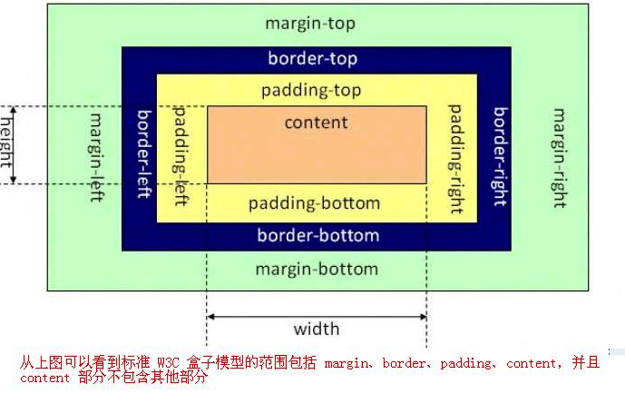
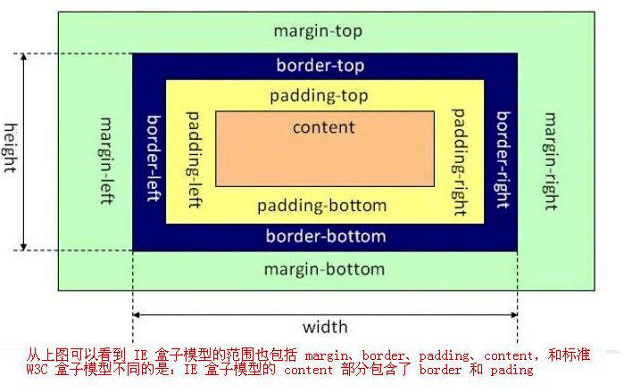

css
简介：
层叠样式表是为网页添加样式的代码，与HTML类似，不是真正的编程语言，是一门样式表语言，主要是用来给html添加样式的。
样式声明
外部样式
使用link标签引入外部样式文件，需要注意如下：
- link标签放在head标签内部
- 样式文件需要以.css结尾
- 一个页面往往需要多个样式文件
rel 定义当前文档与被链接文档之间的关系
href 外部样式文件
type 文档类型
1 | <link rel="stylesheet" href="test.css" type="text/css"> |
嵌入样式
使用style标签样式规则放到文档内部定义。
内联样式
直接在某个标签中使用style来定义的
导入样式
使用@import 可以在原样式规则中导入其他样式表，可以在外部样式，style标签中使用。
1 | @import "test.css" |
选择器
基本选择器
- *：选择所有元素
- . ：选择class内的所有元素
- # ：选择id内的所有元素
- div：元素选择器
结构选择器
- div, p：选择所有div标签和p标签的元素
- div p：选择div标签内部的p元素
- div>p:：选择父元素为div的所有p元素
- div+p：选择紧接在div标签之后的所有p标签元素
- p~ul：选择p元素之后的每个ul元素
属性选择器
- [target]：带有target属性的所有元素
- [target=_blank]：target属性等于"_blank"的所有元素
- [title~=test]：title 属性包含单词 "test" 的所有元素
- [title|=test]：title属性为test的单词或以-连接的独立单词
- a[src*="test"] ：src 属性中包含 "test" 字符的每个 元素
- a[src^="https"] ：src 属性值以 "https" 开头的每个 元素
- [attribute\(=value]：：a[src\)=".jpeg"] src 属性以 ".jpeg" 结尾的所有 元素
伪类选择器
- a:link：选择所有未被访问的链接
- a:visited ：选择所有已被访问的链接
- :hover ：鼠标移动到元素上时
- :active：点击正在发生时
- :focus：选择获得焦点的input元素
- :first-child：选择属于父元素的第一个子元素的每个元素
- :last-child：选择属于父元素的最后一个子元素的每个元素
- p:nth-child(n)：选择属于其父元素的第n个子元素的每个元素，可以使用n进行计算
- p:nth-child(odd)：选择属于其父元素的奇数元素
- p:nth-child(even)：选择属于其父元素的偶数元素
元素权重
权重值
多个样式作用于同一个元素时会按照不同权重优先级来展示其真正产生作用的效果，层叠样式表由此诞生。使用类，id，伪类都有不同的权重，具体需要看权限大小。同时可以使用 !important 强制提升某个规则的权限。
权重规则：
- 行内样式style：1000
- id： 0100
- class： 0010
- 标签，伪元素：0001
- *： 0000
继承规则
子元素可以继承父元素设置的样式。但
- 子元素不会继承父元素的所有演示，比如边框，高度等不会继承
- 继承的规则没有权重
盒子模型
标准盒模型

IE盒子模型

外边距 margin
边距顺序依次为：上、右、下、左
1 | margin:10px 10px 20px 20px; |
设置auto之后，浏览器会自动居中，需要区分上下，左右。
1 | margin:0 auto; |
内边距 padding
顺序同margin，但是不存在auto属性。
内外边距都可以使用 top，left，right，bottom单独来进行控制
边框 border
- 类型
border-style，可以单独设置每条边的，也可以统一设置四条边，顺序上右下左。
- none： 定义无边框。
- dotted： 定义点状边框。在大多数浏览器中呈现为实线。
- dashed： 定义虚线。在大多数浏览器中呈现为实线。
- solid： 定义实线。
- double： 定义双线。双线的宽度等于 border-width 的值。
- groove： 定义 3D 凹槽边框。其效果取决于 border-color 的值。
- ridge： 定义 3D 垄状边框。其效果取决于 border-color 的值。
- inset： 定义 3D inset 边框。其效果取决于 border-color 的值。
- outset： 定义 3D outset 边框。其效果取决于 border-color 的值。
- 宽度 border-width，颜色border-color等 原理同上
- 圆角边框 border-radius：可以使用px或者%等单位，也可以分别设置
- 轮廓线：outline：颜色，样式，线宽都可以单独设置或者组合定义。
display
控制显示隐藏，元素的显示机制
- none：隐藏元素
- block：显示为块元素
- inline：显示为行元素，不能设置宽高
- inline-block：行级块元素，允许设置宽高
visibility
控制元素显示隐藏，在隐藏后，空间位依旧保留。
溢出控制 overflow
- hidden：溢出内容隐藏
- scroll：显示滚动条
- auto：根据内容自动处理滚动条
背景样式
- 颜色：可以使用rgb，rgba，十六进制等格式，background-color
- 颜色背景可以设置渐变色，linear-gradient
- 图片：background-image:url(***.jpg),可以使用jpg,png,gif等
盒子阴影
使用box-shadow对盒子元素设置阴影，参数为 水平偏移，竖直偏移，模糊度，颜色。
浮动布局
float属性定义元素在哪个方向浮动，在css中，任何元素都可以浮动，浮动元素会生成一个块级框，而不论本身是何种元素。
取值：
- left：向左浮动
- right：向右浮动
- none：不浮动
文档流：
没有设置浮动的块元素独占一行，浮动是对后面元素的影响。
两个元素只给第一个浮动的话，后边元素会占用第一个元素空间。
两个都浮动时会并列显示。
分别设置左右浮动，可以调整布局。
浮动后悔贬称个块级元素，即可设置宽高。
清除浮动：不希望下边元素收到浮动元素影响时，可以清除浮动。
clear：
left（左边远离浮动元素）
right（右边远离浮动元素）
both（左右都远离浮动元素）
after：使用::after伪类为父元素添加后标签，实现清除浮动影响。
overflow：（overflow：hidden）
子元素使用浮动后将不占用空间，这时父元素高度为将为零。通过添加父元素并设置 overflow 属性可以清除浮动。
将会使用父元素产生 BFC 机制，即父元素的高度计算会包括浮动元素的高度。
定位布局
定位的基本思想：允许定义元素框相对于其正常位置应该出现的位置，或者相对于父元素，另一个元素甚至浏览器窗口本身的位置。
定位类型
- static：默认定位
- 如果没有为定位元素设置偏移，将受父元素的padding等元素影响，但使用定位一般会设置偏移位置。
- relative：相对定位
- 相对于元素原来的位置控制，当元素发生位置偏移时，原位置留白
- absolute：绝对定位
- 不受文档流影响，绝对定位元素拥有行内块特性
- 如果父级元素设置了relative|fixed|sticky，绝对定位子元素将参照父元素进行定位
- fixed：固定位置
- sticky：粘性定位
- 相当于excel表格冻结首行
偏移量 ：top，bottom，left，right